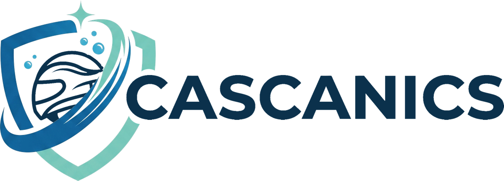
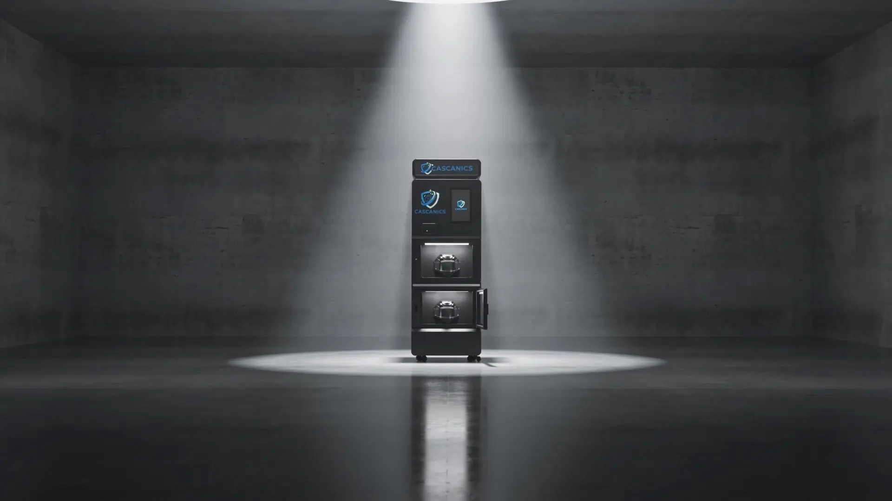
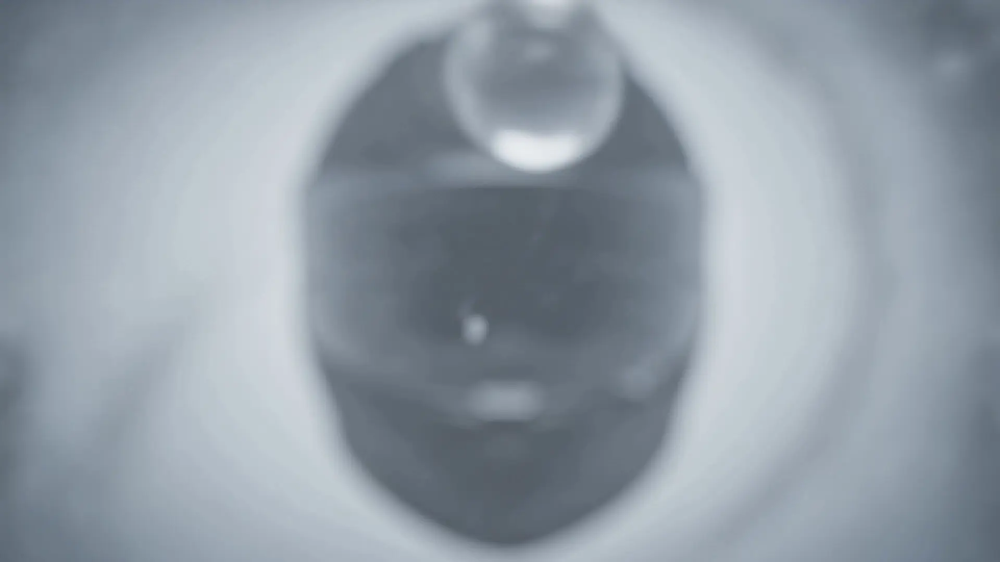
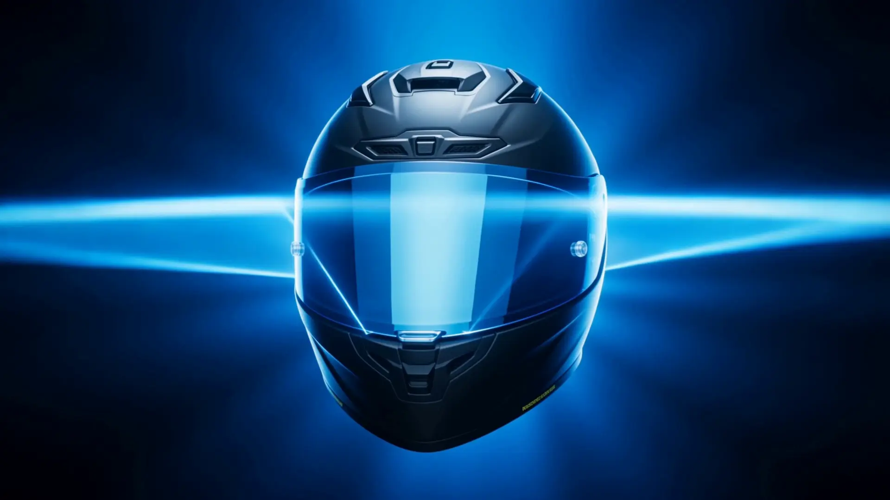
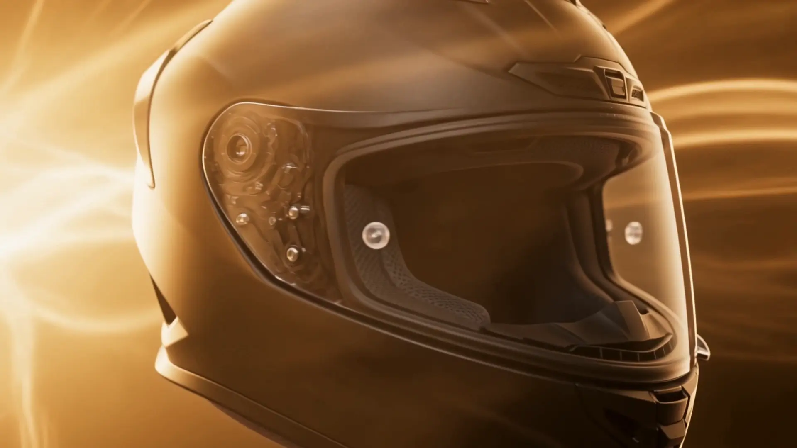

Nettoyage professionnel de casques en libre-service — dossier de présentation

Une machine autonome qui nettoie, traite et parfume les casques en quelques minutes — et qui encaisse toute seule. Un service que vos clients ne trouvent nulle part ailleurs, un revenu récurrent pour votre site.
Le constat
de porteurs de casques dans le monde — moto, vélo, ski, chantier. L'intérieur d'un casque porté quotidiennement est plus contaminé qu'une lunette de toilettes : sueur, sébum, pollution s'accumulent dans les mousses.
pour laver ses mousses à la main : démontage, séchage, risque d'abîmer le casque. Résultat : personne ne le fait.
la durée d'un cycle Cascanics, automatique, sans démontage et sans contact avec l'eau.
La technologie

Une brume ultra-fine enveloppe tout le casque — mousses, sangles, recoins. Elle décolle les résidus de sueur et neutralise les odeurs, sans une goutte d'eau.

Une lumière UV-C balaie l'intérieur du casque et cible les bactéries responsables des odeurs, au cœur des mousses.

Un flux d'air tempéré sèche en profondeur et fixe une fragrance légère, au choix. Le casque ressort sec, frais, prêt à enfiler.
Pourquoi Cascanics
Mise en place
| Désignation | Qté | Montant HT |
|---|---|---|
| Station Cascanics — double caisson Brume active 360° · traitement UV-C · séchage air maîtrisé · écran tactile · terminal CB sans contact + pièces/billets · supervision à distance · garantie 12 mois | 1 | |
| Installation, mise en service & formation Livraison, raccordement, paramétrage des cycles et des prix, prise en main de la supervision | 1 | |
| Remise « offre de lancement » — bon de commande signé ce jour | − 700,00 € | |
| Total HT après remise | 4 800,00 € | |
| TVA 20 % | 960,00 € | |
| Total TTC | 5 760,00 € | |
Conditions : matériel garanti 12 mois pièces et main-d'œuvre (hors consommables et usure normale). Délai indicatif de livraison et d'installation : 4 à 6 semaines à compter de l'encaissement de l'acompte. Le site d'accueil fournit une alimentation 230 V et un emplacement conforme aux prérequis communiqués. Réserve de propriété jusqu'au paiement intégral. Les consommables (liquide de cycle, fragrances) sont disponibles auprès de Cascanics. Machine certifiée CE, liquide conforme aux exigences européennes. Données du présent bon utilisées uniquement pour le traitement de la commande (RGPD — droit d'accès et de rectification : contact@cascanics.com).